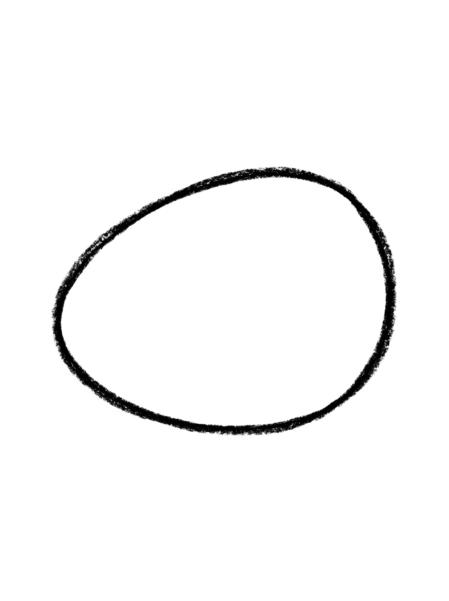
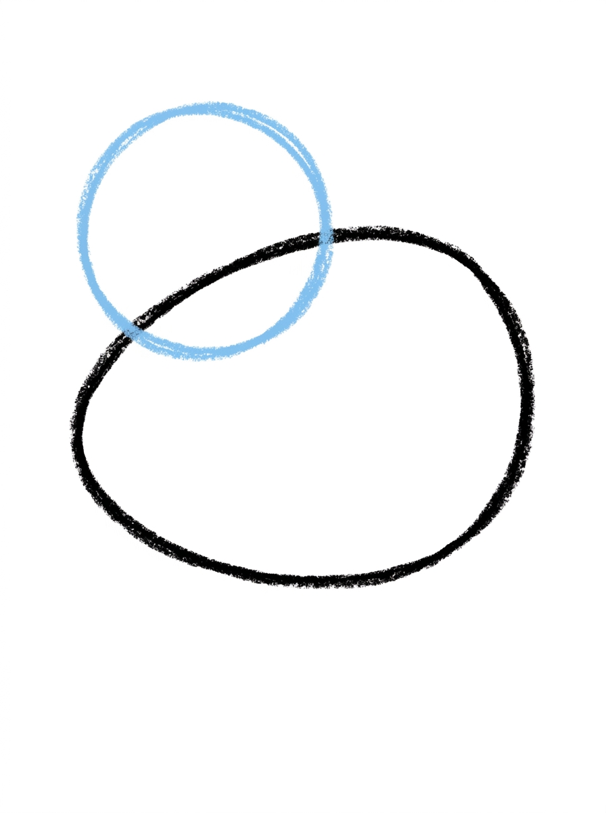
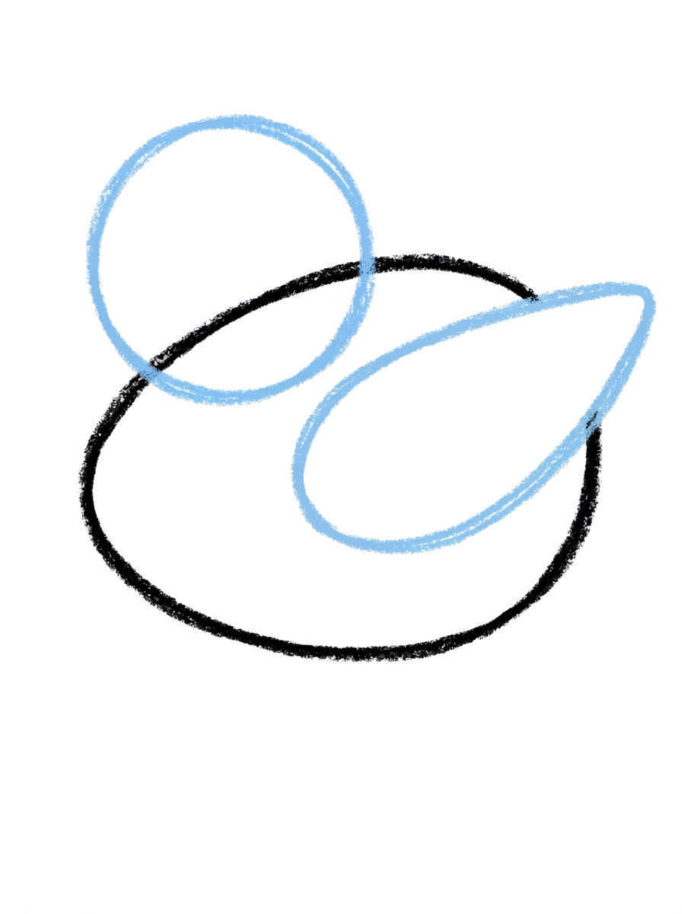
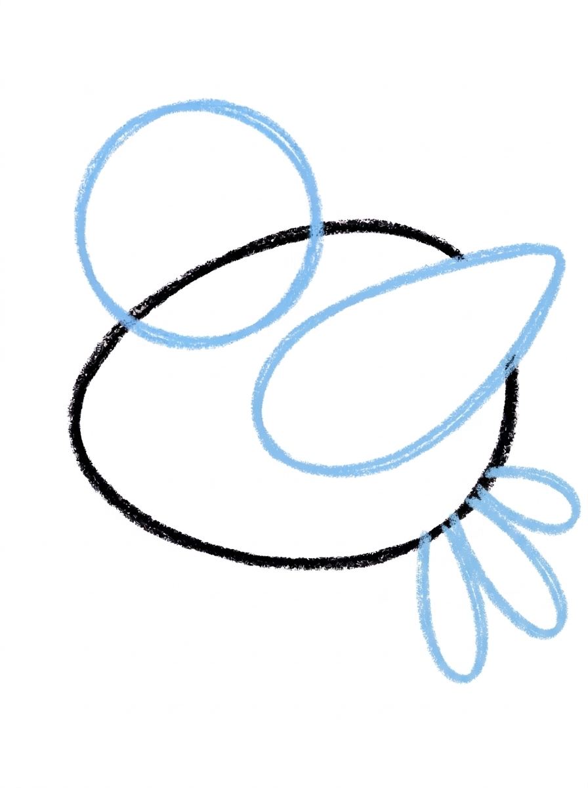
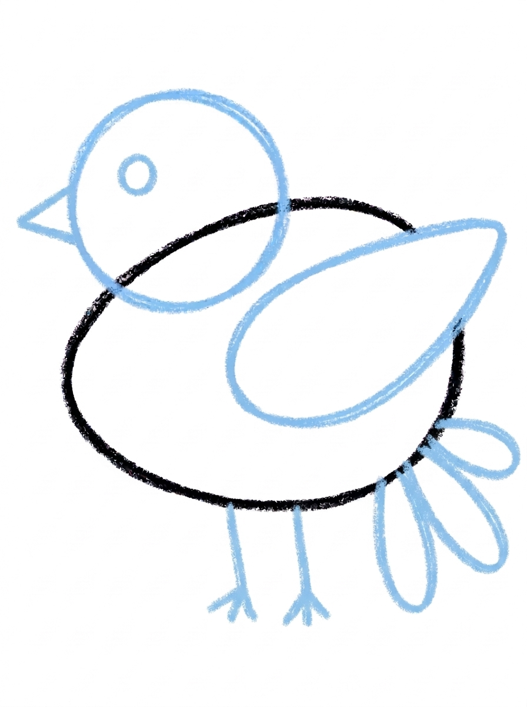

Dove Drawing for Kids How to Draw A Dove in 6 Easy Steps
Quick Answer
Start with a plump oval body, add a circle head, then a pointed-oval wing and three long fanned tail feathers. Finish with a triangle beak, a dot eye and two little legs, then colour the dove white. Made for ages 3 and up — no signup needed, just print and draw.
At a Glance
- Subject: How to draw a dove
- Ages: 3+
- Steps: 6 steps
- Time: ~15 min
- Difficulty: Easy
- Supplies: Paper, crayons
A dove is a lovely first bird to draw because it is built from soft, round shapes a young hand already knows. Kids get a whole gentle bird from one plump oval, one circle and a few simple feather shapes — and the finished dove looks sweet on a card or classroom wall.
✏️ Draw Your Dove in 6 Easy Steps
One step per box — this step by step dove drawing shows each new part in a different color so kids can see exactly what changed.
Step 1: The Body

Draw one plump oval lying on its side in the middle of your paper, a little taller at the back end. This round shape becomes your dove's body.
Step 2: The Head

Draw one medium circle overlapping the top front of the body so the two shapes touch. This is your dove's head.
Step 3: The Wing

Draw one big pointed-oval wing shape on the side of the body, with both ends of the wing touching the body's outline.
Step 4: The Tail

Draw three long rounded feather shapes fanning out from the back end of the body, each one touching the body. Together they make the dove's tail.
Step 5: The Beak, Eye and Legs

Draw one small triangle beak at the front of the head and one round dot eye on the head. Then add two thin short legs hanging from the bottom of the body, with three tiny toe lines at the end of each leg.
Step 6: Color It In

Color your dove! White for the body, head, wing and tail with a little pale gray shading along the lower edges, orange for the beak, black for the eye, and orange for the legs and feet. Great drawing!
📊 Dove Drawing by Age
Every age can join in — just adjust the job.
| Age | What they can do | Tip |
|---|---|---|
| 3-4 | Draw the big body oval and the head circle, and colour the finished dove white. | Draw the wing and tail feathers for them the first time, or let a wobbly wing stand — it still reads as a dove. |
| 4-5 | Add the pointed-oval wing and fan out the three tail feathers on their own. | Count the tail feathers out loud together — three long ones, each touching the body. |
| 6+ | Draw the whole dove start to finish, including the triangle beak, toe lines and pale gray shading. | Challenge them to add a tiny olive branch or a second, smaller dove beside the first. |
🖨️ Download Your Free Dove Drawing Printable
The printable lays out all 6 steps one per box, big enough for little hands — kids draw right alongside each step.
⬇️ Open Free Printable 🖨️ Print🎁 Free printable for ages 3+
🕊️ Peace Card Dove
Turn the finished dove into a card: fold a piece of paper in half, glue or copy the dove onto the front, and write a kind message inside for a friend, teacher or grandparent. Doves stand for peace and kindness, so this drawing makes a thoughtful thank-you or thinking-of-you card that kids can give away the same day they draw it.
What You'll Need to Draw A Dove
You only need paper, a pencil and crayons or markers. Keep white ready for the body, head, wing and tail, pale gray for the soft shading along the lower edges, orange for the beak, legs and feet, and black for the eye. A white crayon on light blue or gray paper makes the dove stand out beautifully if your child wants to try coloured paper.
What They're Learning
This tutorial practices the shapes birds are really made of: a plump oval for the body, a circle for the head, a pointed oval for the wing and a small triangle for the beak. Kids also practice overlapping shapes — the head sits on top of the body — and counting, with three tail feathers and three toe lines on each foot.
Make It Yours
Once the dove is drawn, try it other ways: colour it soft gray or pale blue instead of white, draw it carrying a tiny heart or letter in its beak, add a branch underneath its feet to sit on, or draw a whole row of doves across the top of the page like birds on a wire.
🛒 Our Favorite Drawing Supplies
These are the supplies we reach for in our own home — washable (because kids), quality paper, and enough colors to avoid fights.
As an Amazon Associate, MomYouNeedThis earns from qualifying purchases — at no extra cost to you.
💡 Dove Drawing Tips for Parents
The trickiest moment is Step 3, the wing: both ends of the pointed oval need to touch the body's outline, or the wing looks like it is floating. If your child's wing floats, show them how to start the line right on the body's edge and land it back on the edge.
White birds on white paper can feel invisible to a little artist. Suggest the pale gray shading along the lower edges from Step 6, or let them outline the finished dove in light blue — it keeps the gentle look while making their work easy to see and be proud of.
✏️ Dove Drawing Step by Step
This dove drawing starts from a body with a built-in direction: the plump oval is a little taller at the back end, so before anything is added, the bird already has a front and a back for the head and tail to claim.
Every later step respects that direction. The head overlaps the top front, the tail fans from the back end, the wing lies on the side between them, and the legs hang from the bottom. A part placed against the direction — a tail at the front, a beak on the tall end — is the one error that makes the bird unreadable, and it is always a placement error, never a shape error: each shape on its own is simple.
The colours underline the softness: white everywhere, with pale gray shading only along the lower edges, and the warm accents — orange beak, orange legs and feet — at the bird’s two ends. The eye stays a plain black dot, the only black on the page.
See free dove printable for more.
✏️ One Shape Per Step, Six Steps Total
Use the joins as checkpoints in this dove drawing. Head join: the circle should overlap the body’s top front so the two shapes share an edge. Tail join: all three feather shapes should touch the body at the back end and fan outward — a feather that starts in mid-air has missed its join.
Count the small lines at the bottom: two legs, and three tiny toe lines at the end of each — six toes in total. Toes are the easiest detail in the whole tutorial to drop, and the count catches it before colouring.
Face check: the small triangle beak should sit at the front of the head, pointing the way the bird faces, with the single dot eye behind it on the head. A beak and eye swapped, or an eye that has landed on the body, are the two slips this catches.
See free dove printable for more.
🕊️ A Gentle Bird Kids Recognise
A finished dove drawing makes an unusually useful card. The bird is a recognised symbol of peace, so the same six steps produce a picture that suits a get-well card, a thank-you note or a classroom peace-day display without changing a line.
Draw it straight onto the front of a folded card, or draw it on paper, cut it out and glue it on. The white body needs a coloured background to show itself, so a blue or gray card does the heavy lifting — and the orange beak and feet become the card’s only bright spots.
Pair it with looking at a real bird: doves and pigeons share this exact build — plump body, small head, fanned tail — so a window or park bird-watching moment before a second drawing gives your child something real to check their memory against.
See free dove printable for more.
❓ Dove Drawing FAQs
What is the easiest way to draw a dove?
The easiest way is one shape at a time: a plump oval for the body, a circle for the head, a pointed oval for the wing, three fanned shapes for the tail, then a triangle beak and dot eye. This tutorial breaks it into exactly those six steps.
What age is this dove drawing for?
It is made for ages 3 and up. Three- and four-year-olds can manage the big body and head shapes with a little help on the wing, while older kids can draw every step, including the toes and shading, on their own.
What supplies do we need to draw a dove?
Just paper, a pencil and crayons or markers. For the colours in Step 6 you will want white, pale gray, orange and black — or a sheet of light blue paper so the white dove shows up.
Is the dove drawing printable really free?
Yes — every printable on MomYouNeedThis is 100% free to download and print. No signup, no payment, just tap the download button.
How do I print the dove drawing tutorial?
Open the PDF and print at 100% scale, not 'fit to page', so the step pictures stay the size they were designed. One print gives your child all six steps on a single sheet to follow.
Why does the dove in this tutorial face sideways?
A side view is the easiest angle for beginners: the body, wing and tail all stay visible in one flat row of shapes. Front-facing birds hide the wing and tail, which makes them much harder for little kids to draw.
My child's dove is white on white paper and hard to see. What helps?
Add the pale gray shading from Step 6 along the lower edges of the body, wing and tail, or draw on light blue or gray paper with a white crayon. A light blue outline also works and keeps the soft dove look.
Can my child draw the dove without the legs?
Yes — a dove in flight or sitting down does not need visible legs. Skipping the legs in Step 5 makes the tutorial even easier for a first try, and the beak and eye still make it clearly a dove.
📚 Keep Exploring
- ✏️ All 53 Drawing Tutorials 53 free step-by-step drawing tutorials for kids.
- 🐾 Animal Coloring Free printable animal coloring pages for little learners.
- ✏️ Drawing Practice Free printable drawing pre-writing worksheet for toddlers.